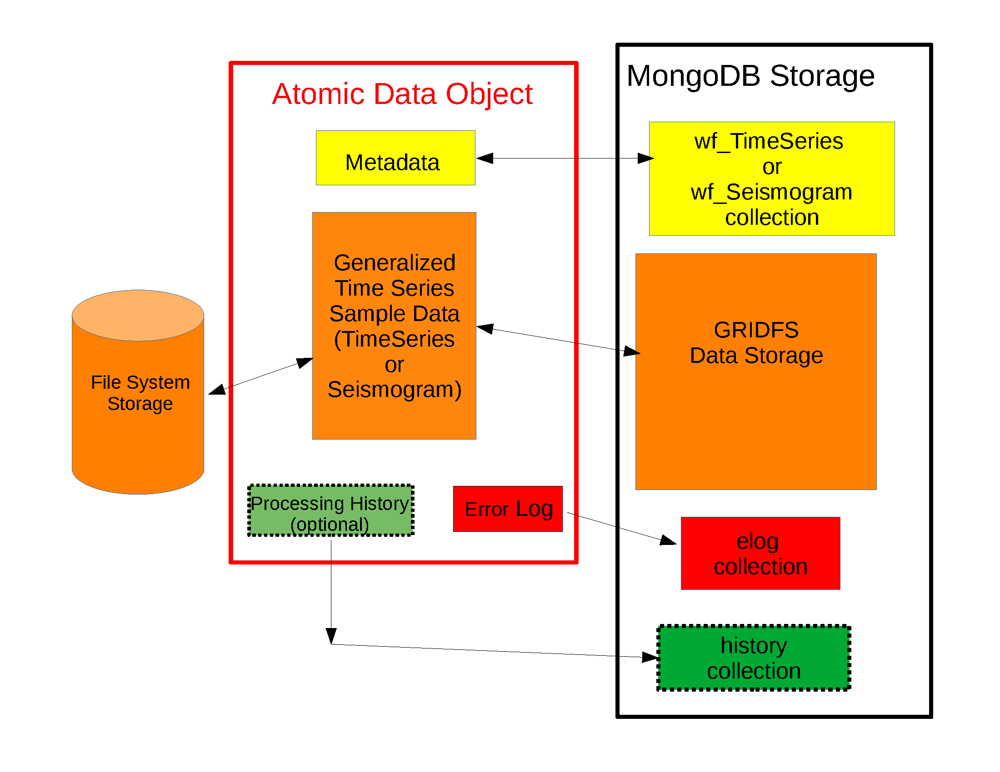

CRUD Operations in MsPASS#
Overview#
The acronym CRUD is often used as a mnemonic in books and online tutorials teaching database concepts. CRUD stands for Create-Read-Update-Delete. It is a useful mnemonic because it summarizes the four main things any database system must accomplish cleanly. This section is organized into subsections on each of the topics defined by CRUD. At the end of this section we summarize some common options in CRUD operations.
The most common database operations are defined as methods in a class we give the obvious name Database. Most MsPASS jobs need to the have following incantation at the top of the python job script:
from mspasspy.db.client import DBClient
from mspasspy.db.database import Database
dbclient = DBClient()
db = Database(dbclient, 'database_name')
where the second argument on Database, 'database_name',
is a name you chose for the dataset you are working with.
For the remainder of this section we will use the symbol “db” as
defined, but as in any programming language you need to recognize the
symbol can be anything you as the user find sensible. “db” is just our
choice.
Unlike relational database systems, a schema is not required by
MongoDB. However, for reasons outlined in the section
Data Object Design Concepts a schema feature
was added as a component of MsPASS. We emphasize the
schema in this design, however, can be thought of as more
like guidelines than rigid rules. The default waveform collection
for most examples is wf_TimeSeries. Workflows that handle
three-component bundles can use the same Database handle and
pass collection="wf_Seismogram" to the read and write methods
where that collection is required.
Create#
We tag all methods of the Database class that do “Create”
operations with the synonymous word “save”. Here we list the most
important save methods with a brief description of each method. Consult
the docstring pages for detailed and most up to date usage:
save_data()is the primary waveform writer. The first argument can be any of the core seismic data objects defined in MsPASS:TimeSeries,Seismogram,TimeSeriesEnsemble, orSeismogramEnsemble. Here is an example usage for a single miniseed trace:# Example assumes filename contains one channel of data in # miniseed format filename = 'testfile.msd' dstrm = read(filename, format='MSEED') # A stream is a list of obspy Trace objects - get the first dtr = dstrm[0] # This mspass function converts a Trace to our native TimeSeries d = Trace2TimeSeries(dtr) db.save_data(d)
By default
save_datastores all Metadata except those linked to normalized collections (source,channel, and/orsite) with no safety checks. We discuss additional common options in a later section. The default return value is theObjectIdor list ofObjectIdvalues for the waveform documents it writes. Setreturn_data=Truewhen an intermediate save needs the updated data object returned to the workflow.When
save_datais passed an ensemble, it writes each live member as an atomic datum. Ensemble Metadata are copied to each member before the member is saved. A common pattern for miniseed data is to bundle single-component data into three-component seismograms before saving:# d is a TimeSeriesEnsemble loaded earlier in the workflow. d3c = bundle_seed_data(d) db.save_data(d3c, collection="wf_Seismogram")
See
bundle_seed_data()for details on the bundling step. Older ensemble-specific write helpers are backward-compatibility wrappers; new code should usesave_data.save_catalog()should be viewed mostly as a convenience method to build thesourcecollection from QUAKEML data downloaded from FDSN data centers via obspy’s web services functions.save_catalogcan be thought of as a converter that translates the contents of a QUAKEML file or string for storage as a set of MongoDB documents in thesourcecollection. We used obspy’sCatalogobject as an intermediary to avoid the need to write our own QUAKEML parser. As withsave_datathe easiest way to understand the usage would be this example derived from our getting_started tutorial.client = Client("IRIS") t0 = UTCDateTime('2011-03-11T05:46:24.0') starttime = t0-3600.0 endtime = t0+(7.0)*(24.0)*(3600.0) lat0 = 38.3 lon0 = 142.5 minlat = lat0-3.0 maxlat = lat0+3.0 minlon = lon0-3.0 maxlon = lon0+3.0 minmag = 6.5 cat = client.get_events(starttime=starttime, endtime=endtime, minlatitude=minlat, minlongitude=minlon, maxlatitude=maxlat, maxlongitude=maxlon, minmagnitude=minmag) db.save_catalog(cat)
This particular example pulls 11 large aftershocks of the 2011 Tohoku Earthquake.
save_inventory()is similar in concept tosave_catalog, but instead of translating data for source information it translates information to MsPASS for station metadata. The station information problem is slightly more complicated than the source problem because of an implementation choice we made in MsPASS. That is, because a primary goal of MsPASS was to support three-component seismograms as a core data type, there is a disconnect in what metadata is required to support a TimeSeries versus a Seismogram object. We handle this by defining two different, but similar MongoDB collections:channelfor TimeSeries data andsitefor Seismogram objects. The name for this method contains the keyword “inventory” because likesave_catalogwe use an obspy python class as an intermediary. The reasons is similar; obspy had already solved the problem of downloading station metadata from FDSN web services with their read_inventory function. As withsave_catalogsave_inventorycan be thought of as a translator from data downloaded with web services to the form needed in MsPASS. It may be helpful to realize that Obspy’s Inventory object is actually a python translation of the data structure defined by the FDSN StationXML standardized format defined for web service requests for station metadata. Likesave_catalogan example from the getting started tutorial should be instructive:inv = client.get_stations(network='TA', starttime=starttime, endtime=endtime, format='xml', channel='*') db.save_inventory(inv)
This example extracts all stations with the “network code” of “TA” (the Earthscope transportable array). A complication of station metadata that differs from source data is that station metadata is time variable. The reason is that sensors change, three-component sensors are reoriented, digitizers change, etc. That means station metadata have a time span for which they are valid that has to be handled to assure we associate the right metadata with any piece of data.
In MsPASS we translate the StationXML data to documents stored in two collections:
siteandchannel. Both collections contain the attributesstarttimeandendtimethat define the time interval for which that document’s data are valid.siteis simpler. It mainly contains station location data defined with three standard attribute keys:lat,lon, andelev. We store all geographic coordinates (i.e. lat and lon) as decimal degrees and elevation (elev) in km. Thechannelcollection contains station location information but it also contains two additional important pieces of metadata: (1) orientation information defined by the keyshangandvang, and (2) full response information. We store response data in MongoDB as a pickle image of the data stored in the StationXML data as translated by obspy. In the read section below we describe how to retrieve response data fromchannel.Finally, we note a key feature of the
save_inventorymethod: it enforces a seed convention to avoid saving duplicate documents. As noted earlier the SEED standard uses the keys we call net, sta, chan, and loc along with a time interval to define a unique block of receiver metadata. Thesave_inventorymethod enforces the unique combination of these keys in a save. It always will refuse to add an entry it interprets as a pure duplicate document. If you need to modify an existing site or channel collection that has invalid documents you will need to write a custom function to override that behaviour or rebuild the collection as needed with web services.
Read#
The Read operation is the inverse of save (create). The core reader was
designed to simplify the process of reading the core data types of MsPASS:
TimeSeries, Seismogram, TimeSeriesEnsemble, and
SeismogramEnsemble. As with the save operators we discuss here
the key methods, but refer the reader to the sphinx documentation for full
usage.
read_data()is the core waveform reader. Its required first argument can be any of the following:A MongoDB
ObjectId. This reads one atomic datum from the waveform collection selected by thecollectionargument. It is convenient but slower than cursor-driven reads because it requires an extra database query per datum.A MongoDB document represented as a python
dictorMetadataobject. This is the preferred serial pattern when iterating over a MongoDB cursor.A
pymongo.cursor.Cursor. This reads all documents returned by the cursor and constructs aTimeSeriesEnsembleorSeismogramEnsemble, depending on the selected collection.
The most common serial pattern is to iterate over a cursor and pass each document to
read_data:query = {...Some MongoDB query dict entry...} cursor = db.wf_TimeSeries.find(query) for doc in cursor: d = db.read_data(doc, collection="wf_TimeSeries")
Use
collection="wf_Seismogram"when reading three-component seismograms, or another waveform collection name such aswf_miniseedwhen appropriate.The data objects in MsPASS are stored internally as C++ objects with multiple elements illustrated in the figure below. Although these objects should be thought of as a single entity the individual parts are handled differently in reading because they define different concepts and are subject to different read, write, and storage rules. Fig. 13 illustrates this fragmentation:

Fig. 13 Schematic diagram of how different parts of a data object are handled. The red box around the center of the figure shows a schematic of the data components when a data object is constructed in memory. The boxes in the right-hand (black) box illustrate that the different pieces of the object are normally stored in different places. This example shows all the components stored within MongoDB (the black box), but we note sample data may also be stored as files in a file system or in cloud containers.#
The key point of this figure is that the waveform data is treated differently from the Metadata and two auxiliary items we call ProcessingHistory and the error log (elog). Waveform data is currently stored either internally in MongoDB’s gridfs storage or in external files. Documents in the wf collection for the data type being read (wf_TimeSeries or wf_Seismogram) contain only data we store as Metadata. A more extensive discussion of Metadata and how we use it can be found here. That section also gives details about ProcessingHistory and the error log and the reasons they are part of MsPASS.
By default
read_datareads Metadata in what we call “promiscuous” mode. That means it takes in all metadata stored in the wf collection at which it is is pointed and loads the results into the objects Metadata container with no type checking or filtering. Alternatives are “cautious” and “pedantic”. Both of the later enforce the type and name constraints defined by the schema. The difference is that in “pedantic” mode any conflicts in data type stored versus what is expected will cause the return to be marked dead. In “cautious” mode the reader will attempt to convert any mismatched types and mark the return dead only if the conversion is not possible (e.g. a string like “xyz” cannot normally be converted to an integer and a python list cannot be converted to a float.) Guidelines for how to use these different modes are:Use “promiscuous” mode when the wf collection to be read is known to be clean. That mode is the default because it is faster to run because all the safeties are bypassed. The potential cost is that some members of the data set could be killed on input. That potential problem can normally be eliminated by running the
cleanmethod described in a section below.Use “cautious” for data saved without an intervening
cleanoperation, especially if the workflow contains an experimental algorithm.The “pedantic” mode is mainly of use for data export where a type mismatch could produce invalid data required by another package.
Passing a cursor directly to
read_dataconstructs an ensemble. The example code below assumes the variablesource_idwas defined earlier, is a validObjectIdin thesourcecollection, and has been cross-referenced intowf_TimeSeries. Notice we include a size check with the MongoDB functioncount_documentsto impose constraints on the query. That is always good practice.query = {"source_id": source_id} ndocs = db.wf_TimeSeries.count_documents(query) if ndocs == 0: print("No data found for source_id = ", source_id) elif ndocs > TOOBIG: print("Number of documents matching source_id=", source_id, " is ", ndocs, "Exceeds the internal limit on the ensemble size=", TOOBIG) else: cursor = db.wf_TimeSeries.find(query) ensemble = db.read_data(cursor, collection="wf_TimeSeries")
A workflow that needs to read and process a large data sets in a parallel environment should use the parallel equivalent of
read_datacalledread_distributed_data(). MsPASS supports two parallel frameworks called SPARK and DASK. Both abstract the concept of the parallel data set in a container they call an RDD and Bag respectively. Both are best thought of as a handle to the entire data set that can be passed between processing functions. Theread_distributed_datamethod is critical to improve performance of a parallel workflow. The use of storage in MongoDB’s gridfs in combination with SPARK or DASK are known to help reduce io bottlenecks in a parallel environment. SPARK and DASK have internal mechanisms to schedule IO to optimize throughput, particularly with reads made through the gridfs mechanism we use as the default data storage.read_distributed_dataprovides the mechanism to accomplish that.read_distributed_datais not a method ofDatabase; it is a separate function inmspasspy.io.distributed. Its first argument can be aDatabasehandle, a dataframe representation of a waveform collection, or a list of ensemble-defining queries. The common pattern for reading a subset of a waveform collection is:from mspasspy.io.distributed import read_distributed_data query = {...Some MongoDB query dict entry...} data = read_distributed_data( db, query=query, collection="wf_TimeSeries", scheduler="dask", )
The output is a Dask bag by default or a Spark RDD when
scheduler="spark". See Parallel Processing, Parallel IO in MsPASS, andread_distributed_data()for more complete parallel workflow examples.
{kind=link}
Update#
Because of the way we stored seismic data in MsPASS (see figure above) the concept of an update makes sense only for Metadata. The update concept makes no sense for ProcessingHistory and error log data. Hence, the history and elog collections, that hold that data, should never be updated. No MsPASS supported algorithms will do that, but we emphasize that constraint because you as the owner of the dataset could (incorrectly) modify history or elog with calls to MongoDB’s api.
As noted elsewhere Metadata loaded with data objects in MsPASS can come
from one of two places: (1) attributes loaded directly with the atomic data from
the unique document in a wf collection with which that data is associated,
and (2) “normalized” data loaded through a cross reference ID from one of the
standardized collection in MsPASS (currently site, channel, and source).
In a waveform processing job (i.e. python driver script) the metadata
extracted from normalized collections should be treated as immutable.
In fact, when schema validation tests are enabled for save operations
(see above) any accidental changes to any normalized attributes will not be
saved but will be flagged with error log entries during the save.
In most cases regular attributes from normalized data (e.g. source_lat and
source_lon used for an earthquake epicenter) are silently ignored in an
update. Trying to alter a normalization id field (i.e. source_id, site_id,
or channel_id) is always treated as a serious error that invalidates the
data. The following two rules summarize these idea in a more concise form:
Update Rule 1: Processing workflows should never alter any database attribute marked readonly or loaded from a normalization collection.
Update Rule 2: Processing workflows must never alter a cross-referencing id field. Any changes to cross-referencing ids defined in the schema will cause the related data to be marked dead.
These rules apply to both updates and writes. How violations of the rules
are treated on writes or updates depends on the setting of the mode argument
common to all update and write methods described in more detail in a section
below.
Delete#
A delete operation is much more complicated in MsPASS than what you would find as a type example in any textbook on database theory. In a relational system delete normally means removing a single tuple. In MongoDB delete is more complicated because it is common to delete only a subset of the contents of a given document (the equivalent of a relational tuple). The figure above shows that with MsPASS we have the added complexity of needing to handle data spread across multiple MongoDB collections and (sometimes) external files. The problem with connected collections is the same as that a relational system has to handle with multiple relations that are commonly cross-referenced to build a relational join. The external file problem is familiar to any user that has worked with a CSS3.0 relational database schema like Antelope.
In MsPASS we adopt these rules to keep delete operations under control.
Delete Rule 1: Normalization collection documents should never be deleted during a processing run. Creation of these collections should always be treated as a preprocessing step.
Delete Rule 2: Any deletions of documents in normalization collections should be done through one of the MongoDB APIs. If such housecleaning is needed it is the user’s responsibility to assure this does not leave unresolved cross-references to waveform data.
Delete Rule 3: Deletes of waveform data, wf collections, history, and error log data are best done through the mspass Database handle. Custom cleanup is an advanced topic that must be handled with caution.
We trust rules 1 and 2 require no further comment. Rule 3, however, needs some clarification to understand how we handle deletes. A good starting point is to look at the signature of the simple core delete method of the Database class:
def delete_data(self,id,remove_unreferenced_files=False,
clear_history=True,clear_elog=False):)
As with the read methods id is the ObjectID of the wf collection document
that references the data to be deleted.
Similarly, the idea of the clear_history and clear_elog
may be apparent from the name. When true all documents linked to the
waveform data being deleted in the history and elog collections (respectively)
will also be deleted. If either are false, debris can be left behind
in the elog and history collections. On the other hand, setting either
true will result in a loss of information that might be needed to address
problems during processing. Furthermore, both are only relevant to
fully or partially processed data. In general, we recommend the default
for any cleanups applied within a workflow. Set clear_elog true only in
post processing cleanup after you are confident there are not serious
errors that need to be traced. Set clear_history True only if you have
no interest in retaining the object level history. The default is True
because we view object level history preservation as a last step to
provide a mechanism for others to reproduce your work.
The main complexity in this method is behind the boolean argument with the name
remove_unreferenced_files. First, recognize this argument is completely
ignored if the waveform data being referenced is stored internally in
MongoDB in the gridfs file system. In that situation delete_data
will remove the sample data as well as the document in wf that id defines.
The complexity enters if the data are stored as external files. The
atomic delete_data method of Database is an expensive operation that should be
avoided within a workflow or on large datasets. The reason is that
each call for deleting an atomic object (defined by its id) requires a
second query to the wf collection involved to search for any other
data with an exact match to two attributes we used to define a
single data file: dir which is a directory name and dfile which is the
name of the file at leaf node of the file system tree. (CSS3.0 users
are familiar with these attribute names. We use the same names as the concept here
is identical to the CSS3.0’s use.) Only when the secondary query finds
no matching values for dir and dfile will the file be deleted.
You should recognize that if, as is strongly advised, data are organized in
a smaller number of larger files deletes of this kind can leave a lot of
debris. For example, it is easy to produce examples where deleting thousands of
files in a dataset with millions of files removes few if any files. On the
other hand, the common old SAC model of one waveform per file is an abomination
for storing millions of waveforms on any HPC system. If your application
requires frequent delete operations for cleanup during a workflow
we strongly advise you store all your data with the
gridfs option.
Key IO Concepts#
MsPASS Chemistry#
In this section we expand on some concepts the user needs to understand in interacting with the io system in MsPASS. If we repeat things it means they are important, not that we were careless in writing this document.
It might be useful to think of data in MsPASS with an analogy from chemistry: Ensemble data are analogous to molecules make up of a chain of atoms, the atoms are our “Atomic” data objects (TimeSeries or Seismogram objects), and each atom can be broken into a set of subatomic particles. The figure above illustrates the subatomic idea visually. We call these “subatomic particles” Metadata, waveform data, error log, and (processing) history. The subatomic particle have very different properties.
Metadata are generalized header data. Our Metadata concept maps closely to the concepts of a python dict. There are minor differences described elsewhere. For database interaction the most important concept is that Metadata, like a dict, is a way to index a piece of data with a name-value pair. A fundamental reason MongoDB was chosen for data management in MsPASS is that a MongoDB document maps almost exactly into a python dict and by analogy our Metadata container.
waveform data are the primary data MsPASS was designed to support. Waveform data is the largest volume of information, but is different in that it has a more rigid structure; TimeSeries waveform data are universally stored in memory as a vector, and Seismogram data are most rationally (although not universally) stored as a matrix. All modern computer systems have very efficient means of moving contiguous blocks of data from storage to memory so reading waveform data is a very different problem than reading Metadata when they are fragmented as in MsPASS. Note that traditional waveform handling uses a fixed format with a header and data section to exploit the efficiency of reading contiguous memory blocks. That is why traditional formats like SAC and SEGY have a fixed header/data sections that define “the data”. To make MsPASS generic that paradigm had to be broken so it is important to recognize in MsPASS waveform data are completely disaggregated from the other data components we use for defining our data objects.
error log data has yet another fundamentally different structure. First of all, our normal goal in any processing system is to minimize the number of data objects that have any error log entries at all. After all, an error log entry means something may be wrong that invalidated the data or make the results questionable. We structure error logs internally as a linked list. There is an order because multiple errors define a chain in the order they were posted. The order, however, is of limited use. What is important in a processing workflow is that nonfatal errors can be posted to the error log and are accumulated as the data move through a processing chain. That means all log entries must make it clear what algorithm posted the error. We handle that by having all MsPASS supported processing functions post error messages that have a unique tag back to the process that generated them.
processing history is an optional component of MsPASS processing that is designed to preserve the sequence of data processing steps required to produce a processed waveform saved by the system. The details of the data structures used to preserve that history is a lengthy topic best discussed elsewhere. For this section the key point is that preserving the history chain is an optional save parameter. Whenever a save operation for history is initiated the accumulated history chain is dumped to the database, the history chain container is cleared, and then redefined with a hook back to the data that was just saved.
In MsPASS Metadata are further subdivided into three additional subsets that are handled differently through the schema definition:
An attribute can be marked read-only in the schema. As the name implies that means they are never expected to be altered in a workflow.
A special form of read-only attributes are attributes loaded by readers from normalized collections. Such attributes are never saved by atomic object writers and the normalized collection (i.e. source, site, and channel) are always treated as strictly read only.
Normalization requires a cross-referencing method. In MsPASS we normally uses the ObjectID of the document in the normalizing collection and store that attribute using a key with a common structure:
collection_idwhere “collection” is a variable and “_id” is literal. (e.g. the linking key for the source collection is “source_id”). We use that approach because in MongoDB an ObjectID is guaranteed to provide a unique index. That allows the system be more generic. Hence, unlike FDSN data centers that depend upon the SEED format in MsPASS net, sta, chan, loc (the core miniseed keys) are baggage for joining the site or channel collections to a set of waveform data. We have functions for linking seed data with net, sta, chan, and loc keys to build links but the links are still best defined by ObjectIDs. An example of why this is more generic is to contrast SEED data to something like a CMP reflection data set. In a CMP survey geophone locations are never given names but are indexed by something else like a survey flag position. We support CMP data with the same machinery as SEED data because the link is through the ObjectID. The process of defining the geometry (site and/or channel) just requires a different cross-referencing algorithm. Because of their central role in providing such cross references a normalization id is treated as absolutely immutable in a workflow. If a writer detects a linking id was altered the datum with which it is associated will be marked bad (dead) and the waveform data will not be saved.
Save Concepts#
Waveform save methods begin with this axiom: a save operation should never abort for anything but a system error. That means the definition of success is not black and white. There are a range of known and probably as yet unknown ways data can acquire inconsistencies that are problems of varying levels of severity. Here is the range of outcomes in increasing order severity:
No problems equal to complete success.
Problems that could be repaired automatically. Such errors always generate error log entries, but the errors are judged to be harmless. A good example is automatic type conversion from an integer to a floating point number.
Errors that are recoverable but leave anomalies in the database. An example is the way read_only data and normalized attributes are handled if the writer detects that they have changed in the workflow. When that happens the revised data are saved to the related wf collection with a an altered key and a more serious error is logged.
Unrecoverable MsPASS errors that might be called an unforgivable sin. At present the only unforgivable sin is changing a cross-referencing id. If a writer detects that cross-referencing ObjectID has been altered the data will be marked dead and the Metadata document will be written to a special collection called “graveyard”.
Unrecoverable (fatal) errors will abort a workflow. At present that should only happen from system generated errors that throw an unexpected exception in python. If you encounter any errors that causes a job to abort, the standard python handlers should post an informative error. If you find the error should be recoverable, you can and should write a python error handler by surrounding the problem section with a try-except block.
Save operations by default apply only limited safeties defined by items 3-4 above. Those are all required because if they were ignored the database could be corrupted. Safeties defined by item 2 are optional to make save operations faster, although users are warned we may change that option as we acquire more timing data.
In a save operation error log data is always saved. The log entries are linked to wf collections with another ObjectID with the standard naming convention for cross-reference keys. That is, wf_TimeSeries_id and wf_Seismogram_id for TimeSeries and Seismogram data respectively.
Data marked dead are handled specially. For such data the sample data will be throw away. The Metadata for dead data are saved in the elog collection document associated with the datum as a subdocument accessible with the key “tombstone”. That provides a simple query mechanism to show only the most serious errors from a processing run. Specifically, this code fragment will print all error messages associated with dead data with a crude tag of seed net, sta, starttime before each list of elog messages:
# This needs to be checked for correctness - done while off the grid query = {'$def' : 'tombstone'} cursor=db.elog.find(query) for doc in cursor: wfmd=doc['tombstone'] print('Error log contents for this Seismogram marked dead:', wfmd['net'],wfmd['sta'],UTCDateTime(wfmd['startime']) err=doc['logdata'] for e in err: print(e.message)
Note the above is minimal to be concise. A good report would contain additional entries from the tombstone contents and additional components of the container defined the symbol “e”.
Saving history data is optional. When enabled the history chain contents are dumped to this history collection, the history container is cleared, and then initialized with a reference to the saved entry and the data redefined as what we call an “ORIGIN”. The clear process is done because of a concern that history data could, in some instances, potentially cause a memory bloat with iterative processing.
Read concepts#
Reads have to construct a valid data object and are subject to different constraints. We believe it is most instructive to describe these in the order they are handled during construction.
Construction of TimeSeries or Seismogram objects are driven by document data read from the wf_TimeSeries or wf_Seismogram collection respectively. By default the entire contents of each document are loaded into Metadata with no safety checks (defined above as “promiscuous mode”). Options allow Metadata type checks to be enabled against the schema. In addition, one can list a set of keys that should be dropped in the read.
By default normalized Metadata can only be loaded through cross-referencing id keys (currently source_id, site_id, and/or channel_id but more may be added). The set of which collections are to be loaded are controlled by optional parameters in each reader. An important constraint is that for all normalized collections defined as required, if the cross-referencing key is not defined a reader will ignore that datum. Atomic
read_datacalls silently signal that condition by returningNone. Ensemble reads throughread_dataand distributed reads throughread_distributed_datanormally silently skip such data. That model is intentional because it allows initial loading of a large data set with unresolvable anomalies that prevent one or more of the cross-referencing ids from being defined.The waveform data is read and the data object is constructed. If that process fails the data will be marked dead and an error log posted with the reason (e.g. a file not found message).
If the sample date read is successful the error log will normally be empty after any read.
If processing history is desired the
load_historyoption needs to be set true. In a reader the only action this creates is initialization of the ProcessingHistory component of the data with a record providing a unique link back to the data just read.
We reiterate that the overall behavior of all readers are controlled by the
mode= argument common to all. The current options are: promiscuous,
cautious, and pedantic. Detailed descriptions of what each mean are
given above and in the sphynx documentation generated from docstrings.
Update Concepts#
As noted above an update is an operation that can be made only to Metadata. In MsPASS Metadata map directly into MongoDB’s document concept of name-value pairs, while the waveform data are stored in some version of a file. We know of two common application for a pure Metadata update without an associated save of the waveform data.
A processing step that computes something that can be conveniently stored as Metadata. Examples are automated phase pickers, amplitude measurements and assorted QC metrics.
Pure Metadata operations. e.g. most reflection processing systems have some form of generic metadata calculator of various levels of sophistication. The most flexible can take multiple Metadata (header) values and use them to compute a set a different value. Such operations do not alter the waveform data but may require a database update to preserve the calculation. An example is an active source experiment where receiver coordinates can often be computed from survey flag numbers or some other independent counter. In MsPASS Metadata calculations are particularly easy and thus likely because python is used as the job control language. (Classical seismic reflection systems and programs like SAC use a custom interpreter.)
Updates to data that only involve Metadata changes should obey this rule:
Update Rule 3: Updates for Seismogram and TimeSeries object Metadata should be done through the
update_metadatamethod ofDatabase. Updates to other collections should use the pymongo API.
As noted elsewhere numerous online and printed documentation exists for MongoDB
that you should refer to when working directly with database collections.
As the rule states when you need to save the results of a pure Metadata change
within a workflow (e.g. posting a phase pick) use the update_metadata
method of Database. That method has two standard arguments already
discussed above: (1) mode, and (2) collection.
Three others are important for controlling the behavior of updates:
ignore_metadata_changed_test is a boolean that is False by default. We know of no example where setting this argument True in a update would be advised (it exists as an option only to streamline create operations that are run through the same method.). The Metadata container does bookkeeping that marks which, if any, key-value pairs in the container have been altered since the data was loaded (constructed). The
update_metadatanormally uses that feature to reduce the size of the update transaction by only submitting updates for key-value pairs marked changed. Setting this argument True would most likely be harmless, but would also add inefficiency.exclude_keys is an optional list of keys for the Metadata container that the method should not try to update. Use of this option is rare. An example where it might be useful is if some function altered a Metadata value that is known to be incorrect.
data_tag was discussed above for save/create operations. When the entire contents of a TimeSeries or Seismogram object are being saved the tag serves as a mark for saves to distinguish those data from the starting data or other intermediate saves. In a pure update, however, the meaning is different. The data_tag argument is used any data updated will have the associated tag in the database changed to the string specified in the call to
update_metadata. The default is to do nothing to any existing tag (i.e. the tag is not updated).